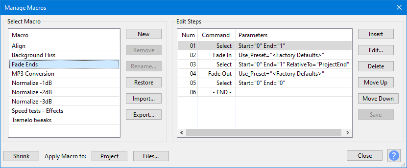
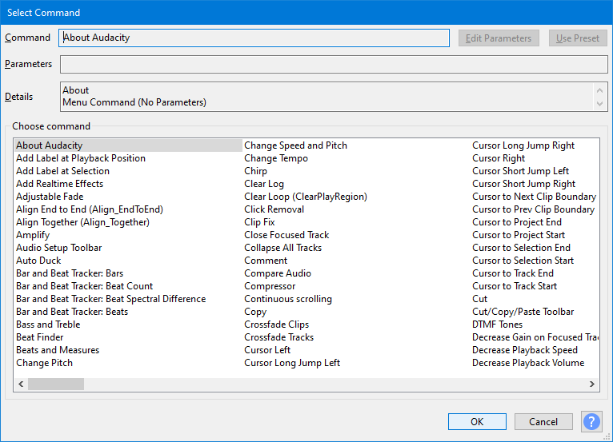

Macros
A Macro is a sequence of pre-configured commands (mainly effects) in a set order that can be applied automatically to projects or audio files. Any built-in, LADSPA, LV2, Nyquist, VST or Audio Unit (Mac) effect shown in the Effect Menu can be added to a Macro. You can also add plugins in any format that are shown in the Generate or Analyze Menus (including Vamp analysis effects), the built-in Find Clipping analyzer and a number of export commands.
Macros follow a fixed sequence of instructions. If you want more flexibility than that, you may want to look at Python Scripting which uses the same commands and the Python language.
| When applying a macro to files it is recommended not to process more than 500 files at a time. |
Contents
- What are the uses for Macros
- How to access Macros
- Macro output
- Manage Macros
- Macros Palette dialog
- Macro commands
- Macro command P#parameters
- Sharing a Macro
- Where Macros are stored
- Macros examples
What are the uses for Macros
The three main uses of Macros are:
- Batch processing: where many audio files are processed unattended with one or more effects then exported to a new file.
To use this use the Apply Macro to: button in the Macros Palette or the Manage Macros dialog.
- Effects automation: where the selected audio in the track or tracks in the current project is subjected to the same prescribed sequence of effects and, optionally, a file exported from the entire audio.
| Note that Macros can contain Select commands to make their own selections as the Macro runs. |
- Effect presets: where selected, commonly used, effects are stored with your preferred settings for quick re-use.
Please see Performance testing using Macro Trace for details.
How to access Macros
Macros are available from the Tools Menu:
- to manage Macros, to create, edit and test them
- for a toolbox of Macros
- to apply one named Macro
There are some examples of Macros and tips on using them on the Audacity Support site.
Macro output
If your Macro has an Export command the location for any exported audio files is specified in Directories Preferences.
If you set a default folder for Macro output Audacity will create a folder called "macro-output" in that folder and that will be used for exports from Macros.
If you leave the entry for Macro output blank (default setting) Audacity will default to creating a folder called "macro-output" in:
- Windows: C:\Users\<your username>\Documents\Audacity
- Mac: /Users/<your username>/Documents
- Linux: /home/<your username>/Documents
Manage Macros
Use if you need to create a new Macro or to edit an existing Macro.
- 
See Scripting Reference for a list of the commmands you can use in Macros. These are the same commands as in the menus but with extra commands for Macros and Scripting.
Macros Palette dialog
Use the button to show a reduced Macros Palette dialog with a simple list of the existing Macros.
This dialog is also available directly via

Using the button on this reduced dialog will return you to the full Manage Macros dialog.
Apply Macro to
Both the Macros dialog and the Macro Palette dialog have "Apply Macro to" Buttons:
- applies the selected Macro to the current project.
- applies the selected Macro to selected external audio files that are in a single directory.
| It is recommended not to process more than 500 files at a time. |
For more details see the Macros Palette page on the Audacity Support site.
Macro commands
When you use the button in the Manage Macros dialog, a further dialog will appear enabling you to add a command to your Macro.
- 
There are very many commands available for Macros. You can navigate the commands in the dialog in several ways, using:
- the up/down/left/right arrow keys on your keyboard
- the horizontal scroll bar
- limited search by typing the first few letters of the command you are looking for
| The full list of all commands, with descriptions, is available at Scripting Reference.
Some scriptable commands are particularly useful for Macros. See these pages for details:
|
Macro command parameters
Commands that call Effects, Generators, Analyzers or Tools, use the same familiar graphical interface (GUI) as appears when they are used from the normal top level menus.
Many of the other commands provide a simple GUI comprised of checkboxes and text entry boxes. Typical examples can be seen in the Scriptables I and Scriptables II menus.
| It is strongly recommended that you set parameters for the commands that you use in a Macro.
Otherwise Audacity will use the last-used parameter setting(s) when you ran the effect(s) manually. Also note carefully that settings used in Macros will not affect or change the last-used parameter settings for any effect when next run manually. Basically to paraphrase: "What happens in Macros stays in Macros". |
Please see Manage Macros on the Audacity Support sitefor more details.
Sharing a Macro
You can export a Macro as a TXT file using the button in Macros Manager and send it to another user, or copy it to another computer for use there
You can import another user's Macro, or a copied macro of your own, into your Macros folder by using the button in the Macros Manager.
| You can also edit Exported Macros with a text editor and Import them back in if required. |
Where Macros are stored
Each Macro is automatically saved as a separate text file with TXT extension in the "Macros" folder in Audacity's folder for application data:
- Windows: Users\<username>\AppData\Roaming\audacity\Macros
- Mac: ~/Library/Application Support/audacity/Macros
- Linux: ~/.audacity-data/Macros
| In order to see the Macros folder on Windows, macOS or GNU/Linux, you must show hidden files and folders or type the folder location into your file manager's address bar.
|
Macros examples
See the Macros Examples page on the Audacity Support site for examples of using Macros.